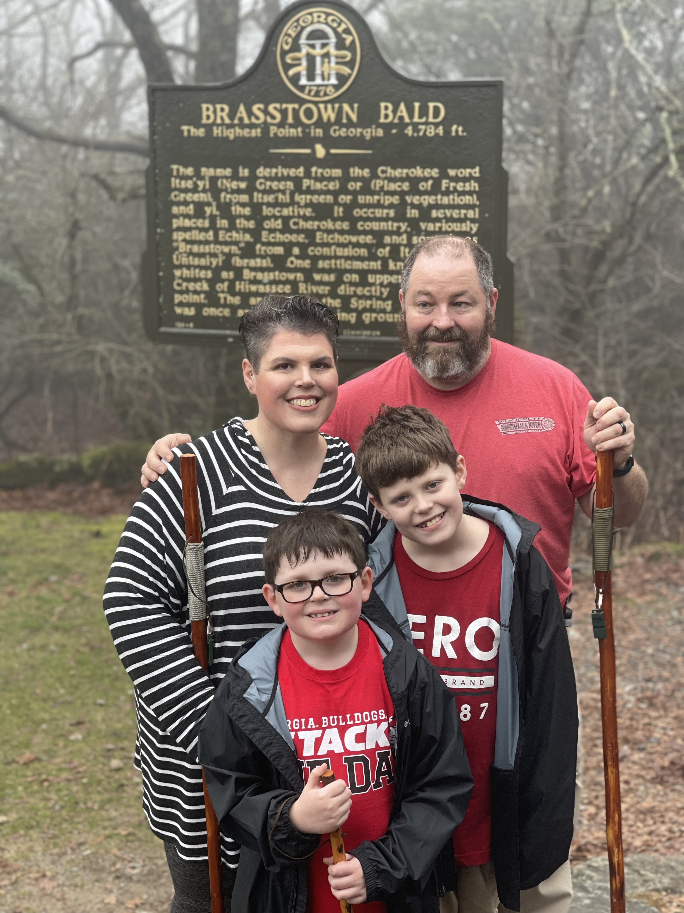

I am married to my husband, Josh, and we have two wonderful little boys, Cole (age 12) and Bennett (age 9). As a family, we enjoy camping, hiking, and kayaking!
We also spend much of our time taking care of our many pets: five dogs, three cats, thousands of honeybees, fifteen chickens, three goldfish, three betta fish, a leopard gecko, a bearded dragon, a russian tortoise, and a crested gecko.
My family lives in Macon, Georgia, about an hour and a half south of Atlanta.
I have a Bachelor's degree in Telecommunications and Film from the University of Alabama, and a Master of Arts in Teaching Special Education from Georgia College and State University. I am currently a student in the Coding Temple Bootcamp program.

My family!
My Work Experience
2010 - Present: Clifton Ridge Middle School
Paraprofessional, Special Education Teacher, 6th Grade Science Teacher
2005 - 2010: Community Newspaper Holdings, Inc.
Advertising Account Executive - Website Advertising Specialist
Why I Want to Become a Developer
My love and interest in coding came in the Fall of 2001 when I was enrolled in an Intro to Computer Science course at the University of Alabama. I chose this course in leui of a foriegn language requirement, and did not expect anthing except an easy grade. We learned
basic HTML and was required to build a website as a part of our final project in the course. I think I might have considered pursuing a computer science degree, but I did not know
enough about the requirements, nor did I have the confidence to believe that it was something I could excel at.
Fast-forward 21 years, and I decided that a major change was in order. I have a unique family situation and needed a career that would allow me more flexibility to care for my family
while contributing a significant income. I had reflected many times over my current experience, and I noticed that in every job I've had my strengths were all linked to technology, my keen eye for details, and strenths in problem-solving. I had also
continued to code casually through apps and games, but not actively learn new languages or practices. It occurred to me that software engineering/development may be something to look into,
and upon further research I decided that it would be the career that would utilize my greatest strengths while also giving me the work-life balance required for my family.
.png)